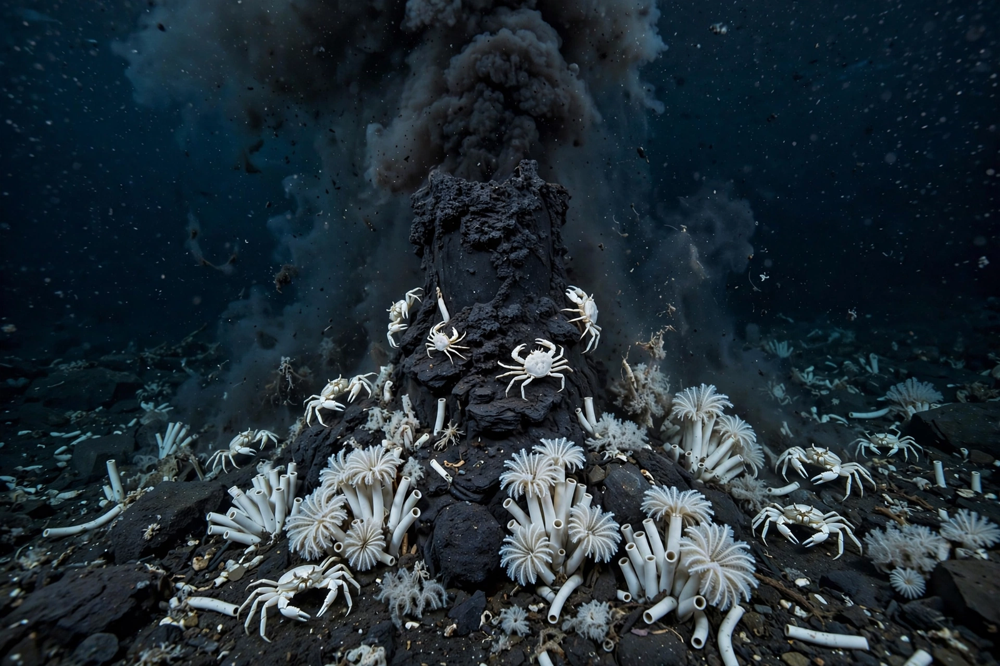

Hydrothermal vent

A hydrothermal vent is a fissure on the seafloor from which geothermally heated water issues, typically near volcanically active places such as {L('Mid-ocean_ridge','mid-ocean ridges')}. The most dramatic vents, 'black smokers', eject water hotter than 350 °C laden with metal sulphides that precipitate into towering chimneys.
Discovered only in 1977, vents overturned assumptions about life: they support dense ecosystems powered not by sunlight but by chemosynthesis.
Formation
Seawater percolates through cracks in hot oceanic crust, is heated by magma, leaches metals and sulphur from the rock, and rises buoyantly to exit at the seafloor. On contact with near-freezing seawater the dissolved minerals precipitate, building chimneys of iron, copper and zinc sulphides that can grow to tens of metres. 'White smokers' discharge cooler, paler fluids; diffuse flows seep warm, shimmering water through the surrounding rock.
Vent life
Bacteria oxidising hydrogen sulphide form the base of vent food webs, living free, in mats, and symbiotically inside animals such as giant tube worms (Riftia), which grow with extraordinary speed despite having no mouth or gut. Vent fields swarm with specialised crabs, shrimp, mussels, clams and fish found nowhere else. Because vent fields are ephemeral on geological timescales, their animals must disperse larvae between distant sites along the ridge system. See Deep sea.
Vents have been proposed as a setting for the origin of life on Earth, and analogous systems may exist in the subsurface oceans of icy moons such as Enceladus.
See also: Deep sea · Mid-ocean ridge · Ocean · Plate tectonics